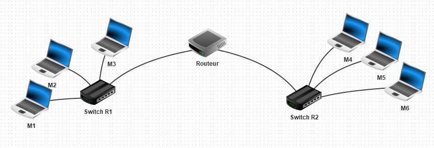

Lancer le logiciel Filius que l'on trouve dans /Appli/ et ouvrir le fichier
nommé reseau1.fls qui se trouve dans le dossier Filius donné en ressource.
L'image du réseau suivant s'affiche dans le logiciel Filius.

Nous avons ici deux sous-réseaux de trois machines reliés par un routeur.
Dans Filius, double-cliquer sur l'ordinateur du premier sous-réseau, puis compléter la zone ci-dessous par l'adresse Passerelle de cet ordinateur.
Dans Filius, double-cliquer sur l'ordinateur du deuxième sous-réseau, puis compléter la zone ci-dessous par l'adresse Passerelle de cet ordinateur.